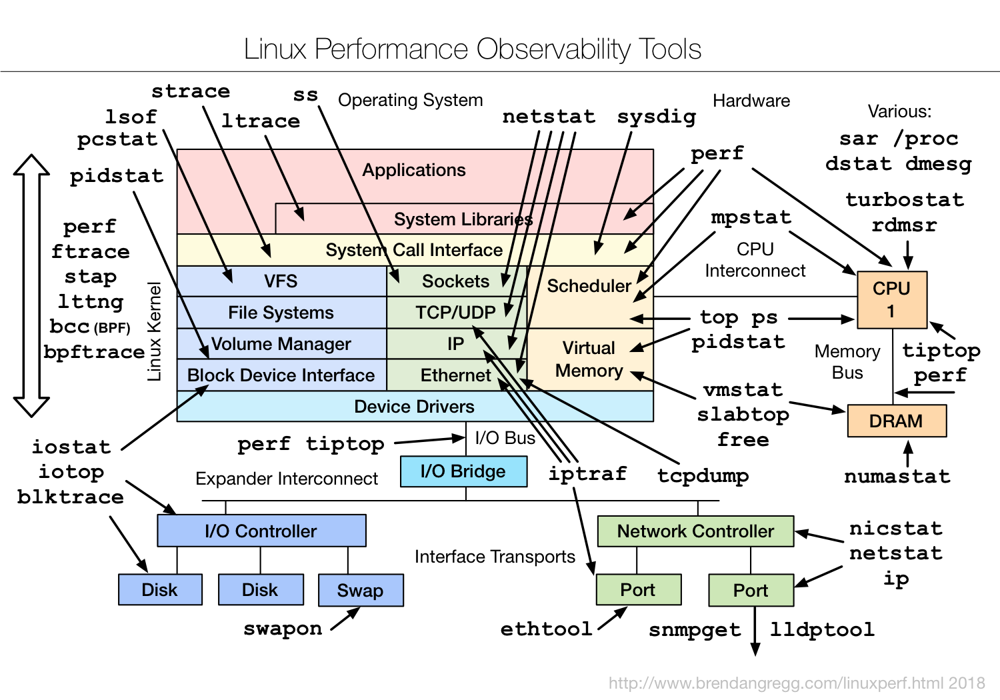

Linux
一、性能图览
1. netstat
查看主机开放的端口
root@Peter-VM:~# netstat -tnlp
Active Internet connections (only servers)
Proto Recv-Q Send-Q Local Address Foreign Address State PID/Program name
tcp 0 0 0.0.0.0:22345 0.0.0.0:* LISTEN 15262/sshd
tcp 0 0 127.0.0.1:44077 0.0.0.0:* LISTEN 864/containerd
tcp 0 0 0.0.0.0:80 0.0.0.0:* LISTEN 16740/python3
tcp 0 0 127.0.0.53:53 0.0.0.0:* LISTEN 323/systemd-resolve
tcp 0 0 127.0.0.1:6010 0.0.0.0:* LISTEN 13972/sshd: root@pt
tcp 0 0 127.0.0.1:6011 0.0.0.0:* LISTEN 15991/sshd: root@pt
tcp6 0 0 :::27017 :::* LISTEN 30114/docker-proxy
tcp6 0 0 :::3306 :::* LISTEN 30448/docker-proxy
tcp6 0 0 :::6379 :::* LISTEN 30781/docker-proxy
查看指定端口对应的进程
root@Peter-VM:~# netstat -anlp | grep ':80'
tcp 0 0 0.0.0.0:80 0.0.0.0:* LISTEN 16740/python3
tcp 0 0 172.18.29.203:53224 100.100.30.26:80 ESTABLISHED 23045/AliYunDun
2. free
root@Peter-VM:~# free -h
total used free shared buff/cache available
Mem: 985M 676M 80M 5.3M 228M 163M
Swap: 947M 0B 947M
二、测试图览
三、调优图览